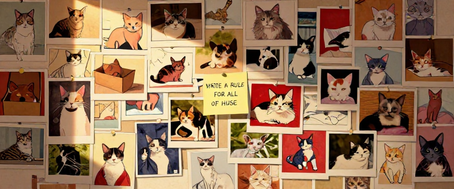
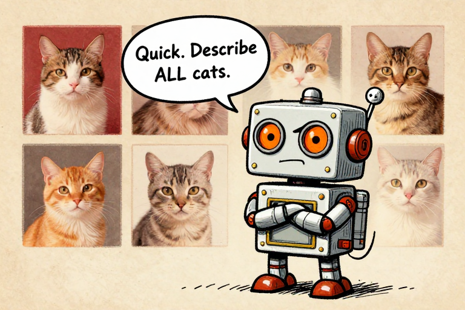
Quick. Describe ALL cats.In Issue 5, we watched the world get connected. The web, open source, Wikipedia, GitHub -- by the mid-2000s, humanity had assembled the largest collection of knowledge, text, and code ever created.
But computers still could not do something a toddler does effortlessly: look at a photograph and say "cat."
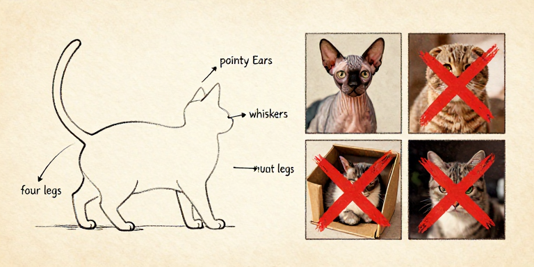
For decades, researchers tried the obvious approach: write rules. Detect edges. Measure angles. Count features. Describe what a cat "looks like" in mathematical terms.
The problem? "What a cat looks like" is almost infinitely variable. Has pointy ears? Some cats have floppy ears. Has fur? Sphynx cats are hairless. Has four legs? So does a dog.
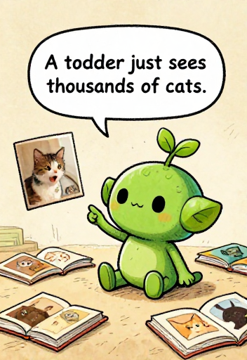
A toddler just sees thousands of cats.A three-year-old identifies every cat instantly. How? Not by following rules. Children learn by seeing thousands of examples. Nobody tells a toddler: "triangular ears at a 47-degree angle." The concept just emerges.
What if machines could learn the same way?
Stop writing rules. Show the machine millions of examples. Let the patterns emerge on their own.
This is the story of the people who spent decades proving they could. An idea abandoned by the mainstream, kept alive by a handful of stubborn researchers, and vindicated in a single stunning afternoon in 2012.
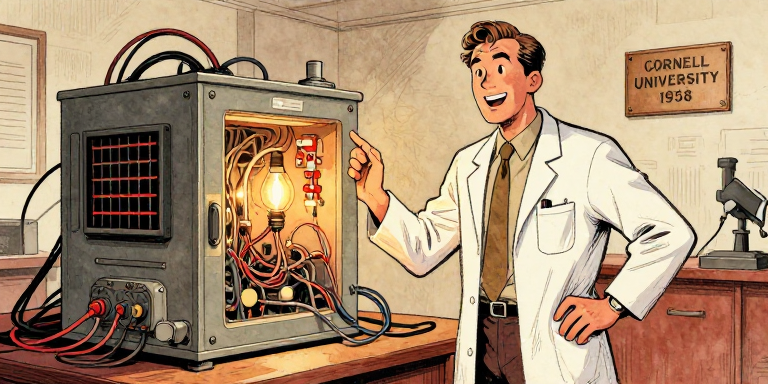
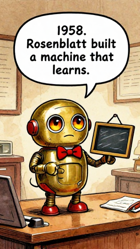
1958. Rosenblatt built a machine that learns.Frank Rosenblatt, a psychologist and computer scientist at Cornell, built the Perceptron -- the first machine that could genuinely learn from data.
The concept was deceptively simple: take inputs, multiply each by a weight, add them up, and check if the sum exceeds a threshold. The breakthrough? The weights were not set by a programmer. The machine adjusted them itself.
A perceptron: inputs multiplied by learned weights, summed, and thresholded.
July 8, 1958. The New York Times: "New Navy Device Learns by Doing." The hype was enormous. The Navy predicted perceptrons would eventually be conscious.
The hype was also dangerous. Because the Perceptron had real limits.
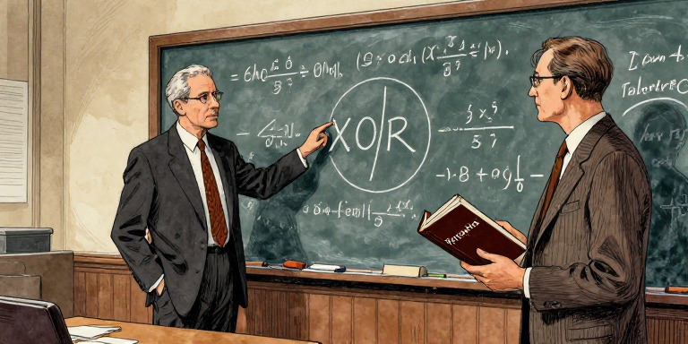
In 1969, Marvin Minsky and Seymour Papert at MIT published Perceptrons, proving mathematically that a single-layer perceptron could not compute XOR (exclusive or). Their proofs were correct. But their conclusion went further: they expressed deep skepticism that multi-layer networks could overcome these limits.
Funding evaporated almost overnight. A striking detail: Minsky and Rosenblatt had both attended the same high school in the Bronx, then championed opposing visions of AI for their entire careers.
The Perceptron was the seed of modern AI: a machine that learns from examples instead of following hand-written rules. Minsky and Papert proved its limits were real -- but they were the limits of a single layer, not of the idea itself. The field confused "this simple version doesn't work" with "the whole approach is hopeless." That confusion cost two decades.
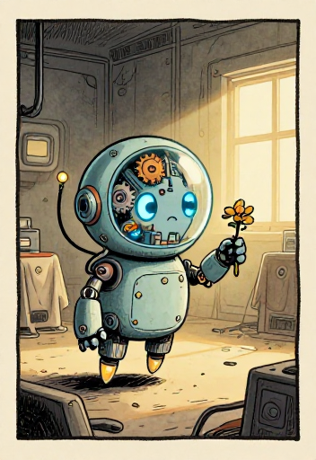
Rosenblatt died in 1971. Age 43.Frank Rosenblatt died in a boating accident on July 11, 1971. He was 43. He never had the chance to respond to Minsky's critique. The idea he pioneered would not be vindicated for another forty years.
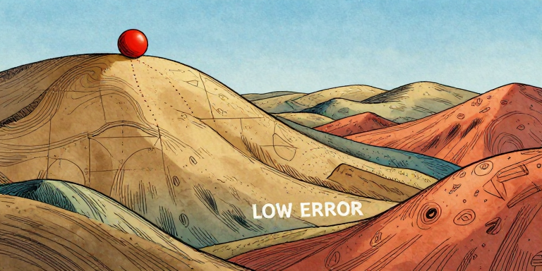
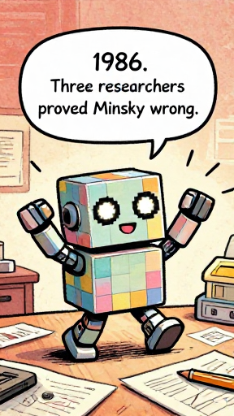
1986. Three researchers proved Minsky wrong.The math behind backpropagation had appeared before -- Paul Werbos in 1974, Linnainmaa in 1970, earlier work in control theory. But the 1986 Nature paper by David Rumelhart, Geoffrey Hinton, and Ronald Williams proved something new: backprop could train multi-layer networks to learn meaningful internal representations -- the very thing Minsky doubted.
Step 1: Forward pass. Feed an input through the network. Each neuron multiplies inputs by weights, sums them, and passes the result through an activation function.
Step 2: Measure the error. Compare the guess to the correct answer. The difference is the loss.
Step 3: Backward pass. Work backwards using the chain rule. For every weight, ask: would nudging this up make the error go up or down?
Forward pass computes a guess; backward pass traces which weights caused the error.
Step 4: Update weights. Nudge each weight a tiny step in the direction that reduces the error. This is gradient descent -- rolling the ball downhill.
Step 5: Repeat. Do this millions of times, with millions of examples. Gradually, the weights converge on values that produce correct answers.
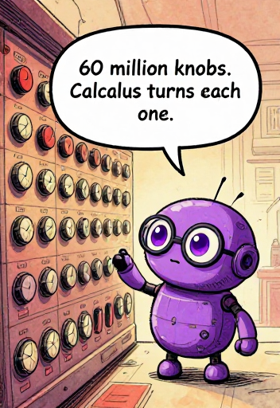
60 million knobs. Calculus turns each one.A neural network with 60 million weights is like a radio with 60 million knobs. Backpropagation tells you which direction to turn each knob to make the music sound a little better. No human could tune 60 million knobs by hand. But calculus can.
Language Note: Throughout this issue, we say the network "learns" or "sees" -- but these are metaphors. Neural networks find statistical patterns in data. They do not understand meaning the way you do. When a network classifies an image as "cat," it has found pixel patterns that correlate with that label. It has never touched fur or heard a purr.
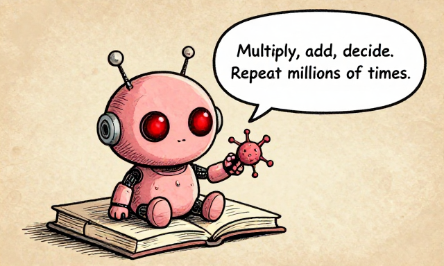
Multiply, add, decide. Repeat millions of times.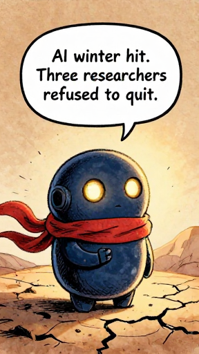
AI winter hit. Three researchers refused to quit.The second AI winter (roughly 1987-1993) was triggered by the collapse of expert systems. Companies spent millions on rule-based AI that proved brittle and expensive. Japan's Fifth Generation Computer Project failed. DARPA wound down. The word "AI" itself became toxic in grant applications.
Neural network researchers had it even worse. The dominant approach became Support Vector Machines -- mathematically elegant, with strong guarantees. Next to SVMs, neural networks looked sloppy.
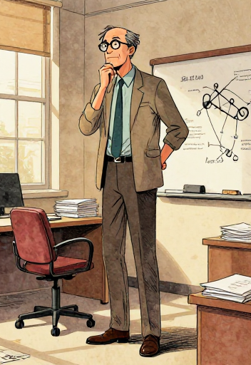
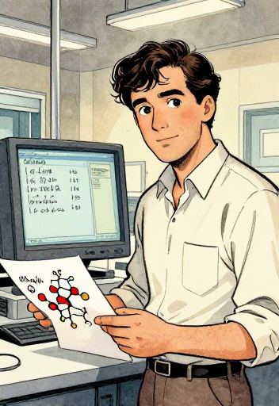
Hinton -- a descendant of logician George Boole -- spent decades at the University of Toronto. He works standing up due to chronic back problems. "The brain doesn't use logical rules. Why should AI?"
LeCun developed convolutional neural networks (CNNs) at Bell Labs. By the late 1990s, his LeNet-5 was reading millions of handwritten checks at banks across America. A working, deployed neural network. And still, the field didn't notice.
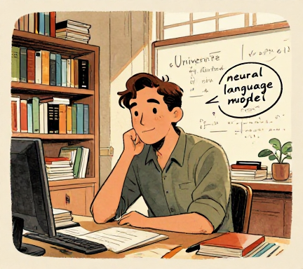
Bengio, at the Universite de Montreal, published "A Neural Probabilistic Language Model" in 2003 -- foundational for GPT and all later language models. He chose to stay in academia: "fundamental AI research should stay in public institutions."
Many others contributed: Schmidhuber & Hochreiter (LSTM, 1997), Fukushima (Neocognitron, 1980), Hopfield (1982), Werbos (1974). The field was built by a community.
The "overnight breakthrough" of 2012 was built on decades of persistence. Hinton started in the 1970s. LeCun had working CNNs in the 1980s. Bengio published foundational language work in 2003. In 2018, all three received the ACM Turing Award. In 2024, Hinton (with John Hopfield) received the Nobel Prize in Physics.
Want to see backpropagation in action? Place data points, configure layers, hit Train, and watch the decision boundary evolve as the network learns. It is gradient descent happening live.
Open Neural Network Playground →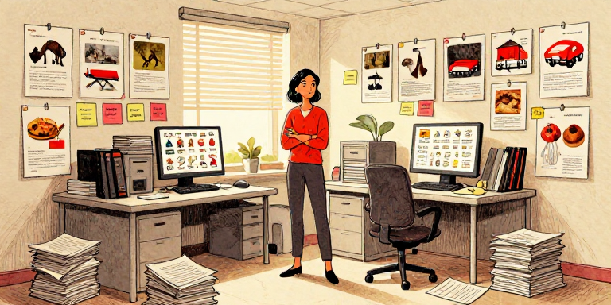
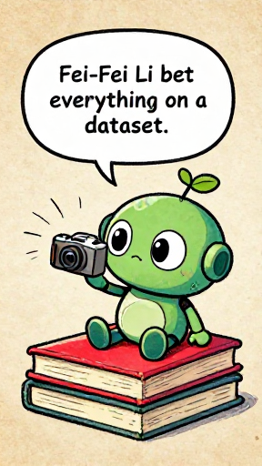
Fei-Fei Li bet everything on a dataset.Fei-Fei Li, then a new professor at Princeton, looked at the problem differently. She was inspired by how children learn: not by rules, but through massive exposure to examples.
Her insight: the field was spending too much effort on algorithms and not enough on data. Colleagues told her it was "a waste of time." Real research meant new algorithms, not data collection.
Li had immigrated from Beijing as a teenager. Her parents ran a dry cleaning business in New Jersey. She worked multiple jobs while studying at Princeton. The dataset idea was dismissed by colleagues -- but she pushed forward anyway.
ImageNet: 14 million images, 21,000 categories -- the fuel for deep learning.
The result was ImageNet: over 14 million labeled images in 21,000+ categories. To label at this scale, Li's team used Amazon Mechanical Turk -- paying workers fractions of a cent per label. The project took three years.
In 2010, she launched the ILSVRC competition: 1,000 categories, 1.2 million training images. The first two years saw modest progress. Traditional methods hit ~25-28% top-5 error.
The ILSVRC competition: steady progress, then AlexNet shattered every record.
Fei-Fei Li's ImageNet proved that in machine learning, data can be more important than algorithms. A good algorithm with insufficient data learns nothing. A reasonable algorithm with millions of labeled examples can learn to see.
Think About It: ImageNet was not perfect. The dataset reflected biases of its web sources -- certain regions were underrepresented, and some labels carried cultural assumptions. Li has since spoken openly about these issues. Even "letting the data speak" requires careful attention to whose voices the data represents. Bias in training data becomes bias in the model.
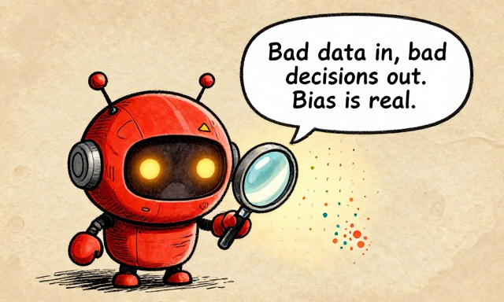
Bad data in, bad decisions out. Bias is real.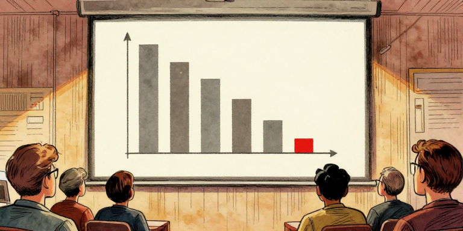
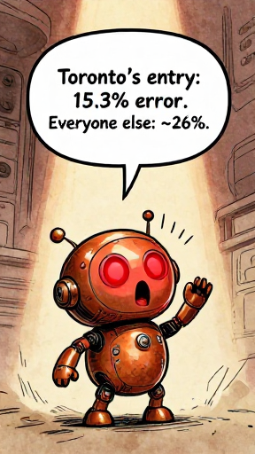
Toronto's entry: 15.3% error. Everyone else: ~26%.AlexNet was a deep convolutional neural network designed by Alex Krizhevsky, with his supervisor Geoffrey Hinton and fellow student Ilya Sutskever at the University of Toronto. The architecture was not entirely new — it was a CNN, the same basic idea LeCun had pioneered. But AlexNet was dramatically larger.
AlexNet's secret weapons:
ReLU activation — if the input is positive, pass it through; if negative, output zero. This solved the vanishing gradient problem — in deep networks, the learning signal weakened through many layers like a message garbled in telephone. ReLU kept the signal strong.
Dropout — randomly switching off neurons during training, forcing robust learning.
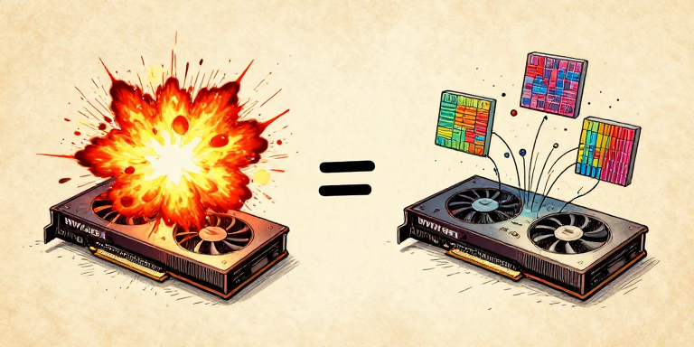
Two GPUs. Cost: $500 each. Changed the world.Here is one of the great ironies of technology history. AlexNet was trained on two NVIDIA GTX 580 graphics cards, each with only 3 GB of memory. Graphics cards designed for rendering explosions in video games turned out to be perfectly suited for neural networks. The thousands of parallel cores that computed pixel colors simultaneously could just as easily compute neuron activations.
The deep learning takeover: from 28% error (2010) to beating humans (2015).
AlexNet was not one breakthrough. It was the convergence of three things: an algorithm that existed since the 1980s (CNNs and backpropagation), a dataset nobody had bothered to build until Fei-Fei Li did (ImageNet), and hardware never designed for AI (GPUs for video games). Breakthroughs often happen not when something new is invented, but when existing pieces finally come together.
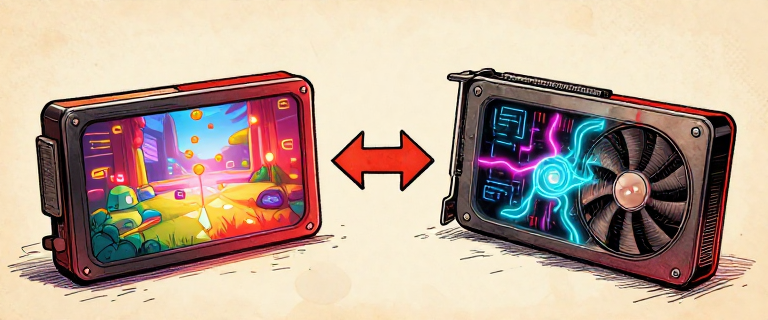
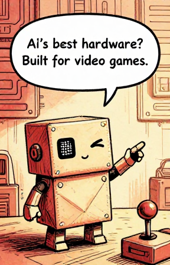
AI's best hardware? Built for video games.A CPU is like one brilliant mathematician — it solves almost any problem, but works through tasks mostly one at a time. A GPU is like an army of thousands of simpler calculators, all working simultaneously. Rendering a video game frame means computing millions of pixels in parallel — and neural network training involves the exact same kind of work.
CPUs: a few powerful cores. GPUs: thousands of simple cores working in parallel.
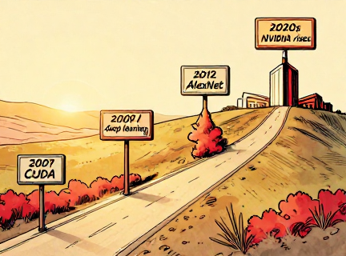
NVIDIA released CUDA in 2007 — a programming platform for general-purpose computing on GPUs. Andrew Ng's group at Stanford showed GPUs could accelerate deep learning by 10 to 70 times. Ng co-founded Google Brain in 2011, which famously trained a network on YouTube thumbnails — it learned to detect cat-like patterns without ever being labeled "cat."
Without cheap, powerful GPUs, AlexNet could not have been trained in a reasonable time. NVIDIA CEO Jensen Huang, recognizing the opportunity, pivoted the company's entire strategy toward AI. A graphics card company became one of the most valuable companies on Earth.
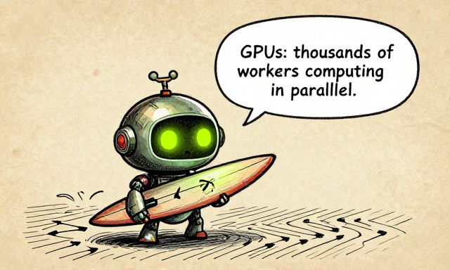
GPUs: thousands of workers computing in parallel.AlexNet trained in less than a week on two GPUs. But as models grew, so did their energy demands. Training GPT-3 consumed an estimated 1,287 MWh of electricity — roughly what 120 US homes use in a year. The deep learning revolution brought incredible capabilities, but also real environmental costs.
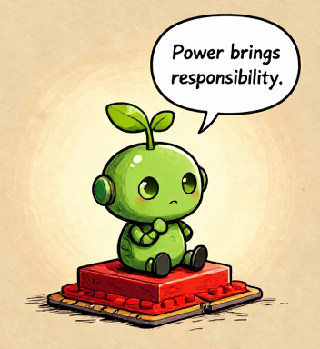
Power brings responsibility.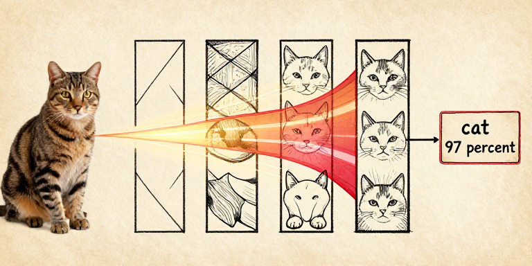
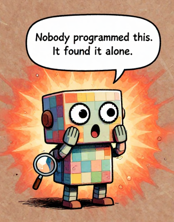
Nobody programmed this. It found it alone.Feature visualization reveals what each layer of a trained network has learned to respond to. In a convolutional neural network, the layers form a natural hierarchy — simple features combining into complex ones, all discovered automatically through backpropagation.
Edges become textures become parts become objects — each layer builds on the last.
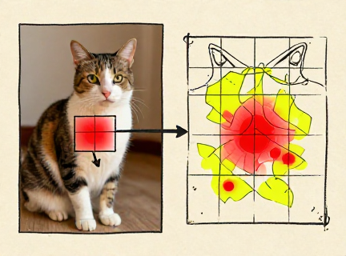
A CNN uses two elegant tricks. Convolutional filters — small sliding windows that scan across the image, so the same edge detector works everywhere. Pooling — periodically shrinking the image to focus on "what" is there rather than "exactly where." This architecture was inspired by Fukushima's Neocognitron (1980) and refined by LeCun at Bell Labs.
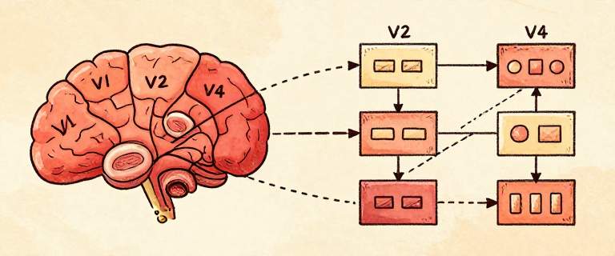
The network arrived at the same solution as the brain.A deep neural network builds understanding from the bottom up: edges become textures, textures become parts, parts become objects. Each layer is an abstraction built on the layer below — the same principle we have seen throughout this entire series, from transistors to operating systems to programming languages. Deep learning discovered the power of abstraction on its own.
Remember our Language Alert from Page 3: when a CNN classifies an image as "cat" with 97% confidence, it has found statistical patterns in pixels that correlate with the label. It has never touched fur or heard a purr. Whether that counts as "seeing" is a question for Page 10.
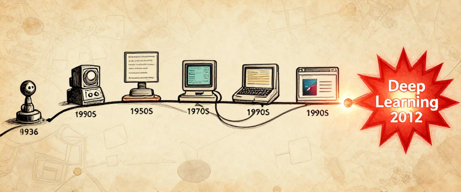
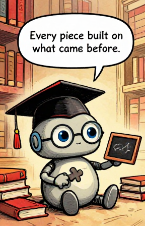
Every piece built on what came before.The deep learning revolution of the 2010s was not a single invention. It was a convergence — and every piece connects to the story we have been telling since Issue 1.
From Turing's question to deep learning — each issue built the foundations for the next.
The connections extend forward too. Ilya Sutskever, co-author of the AlexNet paper, went on to co-found OpenAI. Bengio's 2003 neural language model was a direct precursor to GPT. The path from "a network that can recognize cats" to "a network that can write poetry" was shorter than anyone expected.
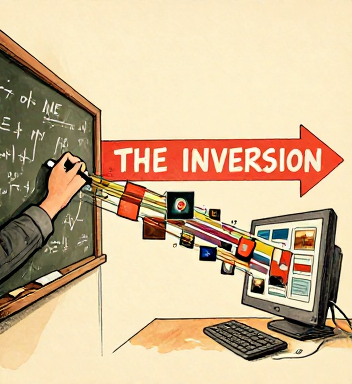
Machine learning inverts the fundamental relationship between humans and computers. For sixty years, humans told machines exactly what to do, step by step. Machine learning says: here are a million examples — figure out the pattern yourself. This is not just a new technique. It is a new paradigm.
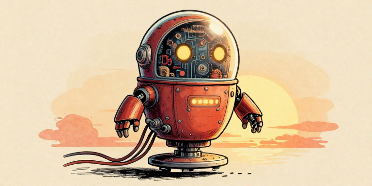
From rules to learning. The biggest shift since Turing.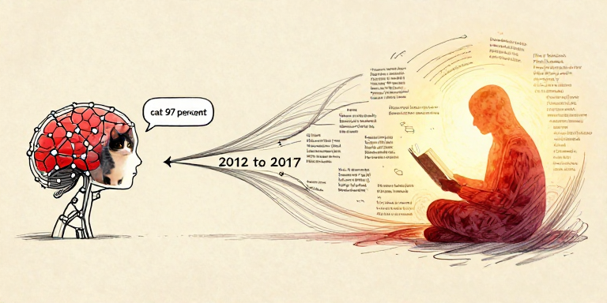
ResNet — a network with 152 layers using "skip connections" — achieved approximately 3.57% top-5 error on ImageNet, surpassing trained human evaluators at ~5.1%. Vision was solved. But language was sequential, contextual, and full of ambiguity. The word "bank" means something different in "river bank" and "bank account."
Recurrent neural networks (RNNs) and LSTMs could process text one word at a time, maintaining a kind of memory. But they were slow, and they struggled with long passages. By the end of a paragraph, the network had often "forgotten" the beginning. Language AI needed something fundamentally new.
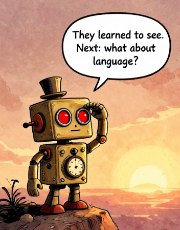
They learned to see. Next: what about language?In 2017, a team of eight researchers at Google published a paper with one of the most confident titles in scientific history: "Attention Is All You Need." What they described — the Transformer — would prove to be exactly as important as the title claimed.
Deep learning conquered vision. Language remained the frontier.
Machine learning is not just a technique. It is a philosophical revolution. For all of computing history, humans translated their understanding into explicit instructions. Machine learning asks: what if the machine could develop its own understanding, directly from experience? This question — first asked by Turing in 1950, pursued by Rosenblatt in 1958, kept alive through decades of doubt, and vindicated by AlexNet in 2012 — defines the future of computing.
Remember the Language Alert from Page 3? When a neural network classifies an image as "cat" with 97% confidence, does it understand what a cat is? It has never touched fur, heard a purr, or been scratched. It has found statistical patterns in pixels. Is that understanding — or something else entirely? This question matters more than ever as we enter the age of language models.